Chapter 10 Supuestos
Añadir los siguientes paquetes, Nota la función de pacman para intalar los paquetes. Esta función hace que si le falta un paquete en la lista lo va a instalar sin hacer tener que hacerlo uno por uno. Si quiere hacerlo separado remueve el # antes de install.packages
#----Install and Load Packages-----
#install.packages("car", dependencies = TRUE)
#install.packages("ggplot2")
#install.packages("pastecs")
#install.packages("psych")
if (!require("pacman")) install.packages("pacman")## Loading required package: pacmanpacman::p_load(car, pastecs, psych, ggplot2, ggversa, knitr, GGally,
tidyverse, kableExtra, reshape2, ggcorrplot, gridExtra)
# Activar los paquetes
library(ggversa) # un paquete con datos
library(knitr)
library(GGally)
library(tidyverse)
library(kableExtra)
library(reshape2)
library(ggcorrplot)
library(gridExtra)
library(car) # Companion to applied regression
library(ggplot2) # Data Visualization
library(pastecs) # Space time Ecological Series
library(psych) # Procedures for Psychological, psychometric and Personality Research10.1 ¿Qué son supuestos?
La ética en estadística basado en comprobar y cumplir con los supuestos de las pruebas estadística que se usan. La gran mayoría de las pruebas tradicional asume que los datos cumple con algunos supuestos, algunos típicos son.
- Distribución normal
- Igualdad de varianza = Homogeneidad de Varianza
- Simetría de las distribuciones
- Datos recolectado al azar
Cuando no se cumple con los supuestos estamos aumentando la probabilidad de tipo de error 1, es decir rechazar la hipótesis nula cuando se debería aceptar o tipo de error 2, cuando se debería aceptar la alterna cuando se debería rechazar.
Por consecuencia es primodial que cada investigador cumple con evaluar los supuestos de las pruebas que usa y si no cumple que busca métodos alternos. Por ejemplo se puede utilizar métodos de análisis no paramétrica, tambien estadística bayesiana o robusta o como alternativas.
En el siguiente modulo se habla de como asegurar que los datos cumple con los supuestos básico de las pruebas paramétricas que incluye t-test, ANOVA entre otros.
Note que aquí el énfasis en este modulo es de evaluar los supuestos con herramientas visual, hay herramientas estadística que son son disponible para cada una de estos supuestos. Vea la sección de estadística para estas alterativas para detalles más completos.
10.2 Homogeneidad de varianza
La homogeneidad de varianza es un supuesto primordial en el análisis de varianza (ANOVA) y sus vertientes. Este mismo supuesto es también importante en el análisis de regresión simple y multivariable; por ejemplo, en el análisis discriminante (discriminant function analysis en inglés). Utilizaremos los datos de la Becasa de Mar Limosa haemastica, un ave migrante de las costas de las marismas de Argentina, de la base de datos Godwits. Para determinar si la razón de adquisición de comida es diferente entre sexo, tiempo del año, y la combinación de estas dos variables (en otras palabras, las interacciones entre ambas), hay que asumir lo siguiente: 1ro. la varianza en las observaciones entre sexo es similar, 2do. la variación en las tres estaciones es similar, y 3ro. la variación entre los grupos por sexo es similar.
10.3 Gráficos de cajas condicionales
Para el ejemplo BecasaDeMar, se removieron algunos datos del análisis como se explica a continuación. En la variable SEX, hay tres categorías: 0 = sexo no identificado, 1 = hembra, y 2 = macho. Se removió la categoría de no identificado usando la siguiente función which:
BecasaDeMar=BecasaDeMar[-which(BecasaDeMar$SEX=={0}),]
Note aquí el - (el signo de resta) antes de which.
El siguiente paso, después de remover los individuos no identificados por sexo, es cambiar el nombre de los niveles 1 y 2 a hembra y macho respectivamente. Para evaluar la homogeneidad de varianza entre las estaciones también se le asigna el nombre del periodo: Verano, Pre-migración e Invierno.
Por ejemplo, con relación al supuesto de homogeneidad, en la figura se nota que hay un poco de variación en la varianza de ciertos grupos, pero en general no habría que preocuparse de una desigualdad como tal, aunque los 4 individuos identificados como puntos en la gráfica en el periodo de verano deberían ser evaluados con más detenimiento para asegurarse que los datos están correctos y que representen datos biológicamente posibles y no error en la toma de los datos o cuando se entraron en la hoja de datos.
10.3.1 Selección de los datos
## RECORD DAY MONTH YEAR LOCATION AGE SEX PERIOD mgconsumed
## 1 1 5 1 97 0 0 0 0 0.07
## 2 2 5 1 97 0 0 0 0 0.16
## 3 3 5 1 97 0 0 0 0 0.25
## 4 4 5 1 97 0 0 0 0 0.07
## 5 5 5 1 97 0 0 0 0 0.14
## 6 6 5 1 97 0 0 0 0 0.26BecasaDeMar=BecasaDeMar[-which(BecasaDeMar$SEX ==0),]
#unique(BecasaDeMar$SEX)
BecasaDeMar$fSEXO <- factor(BecasaDeMar$SEX,
levels = c(1, 2),
labels = c("Hembra", "Macho"))
unique(BecasaDeMar$fSEXO)## [1] Hembra Macho
## Levels: Hembra MachoBecasaDeMar$fPERIODO <- factor(BecasaDeMar$PERIOD,
levels = c(0, 1, 2),
labels = c("Verano", "Pre-migración", "Invierno"))
head(BecasaDeMar) ## RECORD DAY MONTH YEAR LOCATION AGE SEX PERIOD mgconsumed fSEXO
## 125 53 2 4 97 1 1 1 1 0.07 Hembra
## 126 67 16 5 97 0 1 1 2 0.18 Hembra
## 127 69 16 5 97 0 1 1 2 0.39 Hembra
## 128 77 17 6 97 1 1 1 2 0.07 Hembra
## 129 78 17 6 97 1 1 1 2 0.10 Hembra
## 130 79 17 6 97 0 1 1 2 0.08 Hembra
## fPERIODO
## 125 Pre-migración
## 126 Invierno
## 127 Invierno
## 128 Invierno
## 129 Invierno
## 130 InviernoBecasaMar <- ggplot(BecasaDeMar,
aes(y=mgconsumed, x=fSEXO))
BecasaMar + geom_boxplot(notch=TRUE)+
facet_wrap(~fPERIODO)+
theme(axis.title=element_text(size=12,face="bold"),
axis.text=element_text(size=12, face="bold"))+
xlab("Sexo de las aves")+
ylab("Razón de consumo")## Notch went outside hinges
## ℹ Do you want `notch = FALSE`?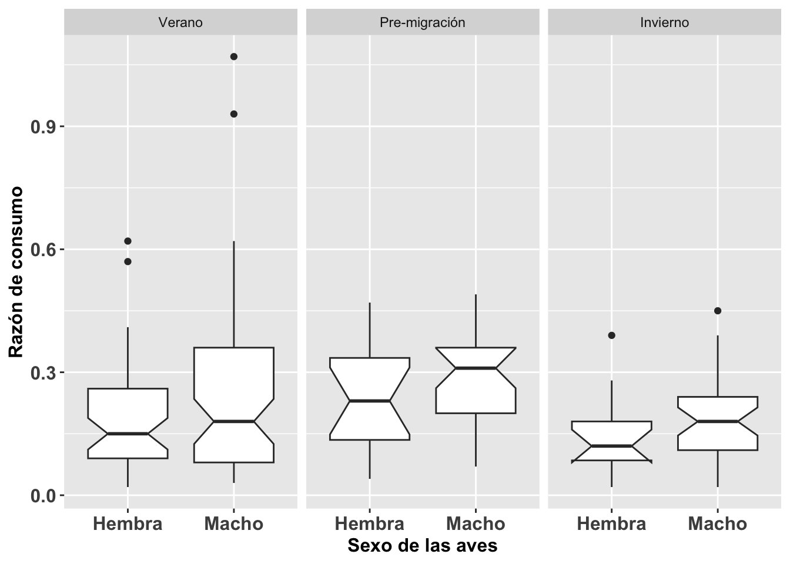
10.4 Homogeneidad de varianza en modelos de regresión
Para el análisis de tipo regresión es necesario evaluar la homogeneidad de los datos utilizando los residuales del modelo. Esto lo logramos graficándolos contra los valores estimados (fitted values) y haciendo un gráfico de caja condicional con los residuales. Los residuales tienen que ser similares en todos los grupos. Si la variación de los residuales no es igual, será necesario transformar los datos o usar otras técnicas que no requieran del supuesto de la homogeneidad de varianza; por ejemplo, mínimos cuadrados generalizados (generalized least square, en inglés) o un análisis no paramétrico.
El gráfico que utilizaremos se llama caja condicional ya que la distribución es condicional al grupo. El residual se calcula como la diferencia entre el valor observado y el valor esperado; en este caso, en la variable de y.
A continuación, completamos el análisis utilizando otra vez los datos de la orquídea Dipodium. Primero hay que hacer un análisis de regresión simple usando lm() y darle un nombre al análisis o sea el modelo. Subseguientemente uno puede llamar los valores necesarios para hacer el gráfico con .fitted y .resid.
## # A tibble: 6 × 2
## Number_of_Flowers Height_Inflo
## <int> <int>
## 1 11 35
## 2 19 47
## 3 18 63
## 4 24 47
## 5 25 61
## 6 17 35##
## Call:
## lm(formula = Number_of_Flowers ~ Height_Inflo, data = dipodium2)
##
## Residuals:
## Min 1Q Median 3Q Max
## -12.7346 -2.4391 -0.0868 2.2087 14.3221
##
## Coefficients:
## Estimate Std. Error t value Pr(>|t|)
## (Intercept) -2.19668 1.24384 -1.766 0.0791 .
## Height_Inflo 0.45074 0.02368 19.038 <2e-16 ***
## ---
## Signif. codes: 0 '***' 0.001 '**' 0.01 '*' 0.05 '.' 0.1 ' ' 1
##
## Residual standard error: 4.266 on 179 degrees of freedom
## Multiple R-squared: 0.6694, Adjusted R-squared: 0.6676
## F-statistic: 362.5 on 1 and 179 DF, p-value: < 2.2e-16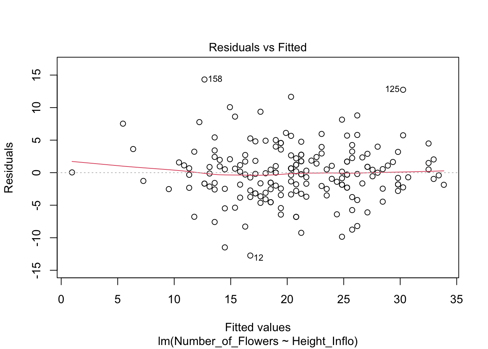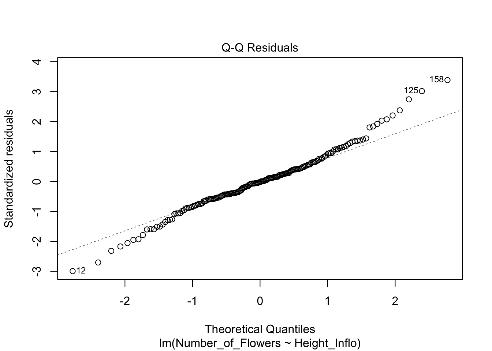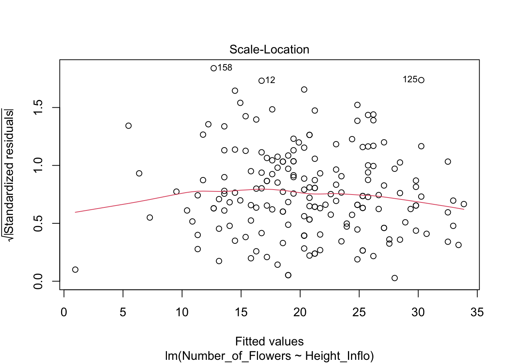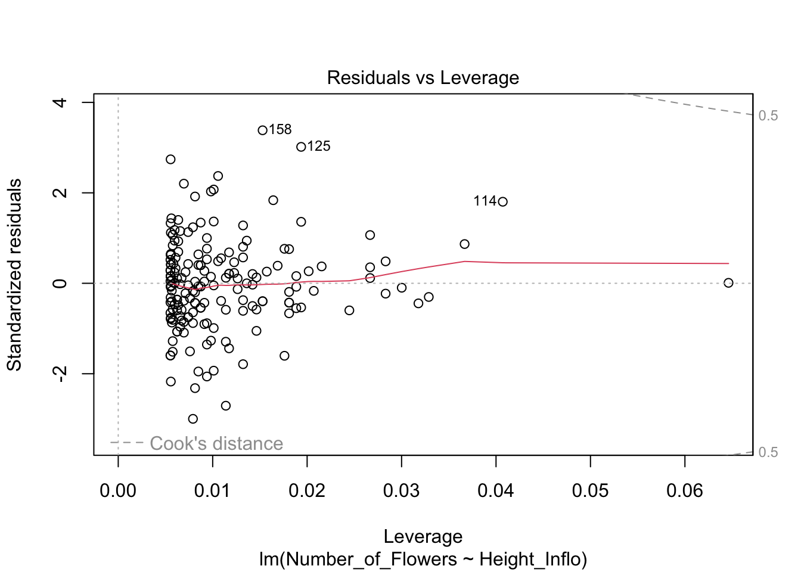
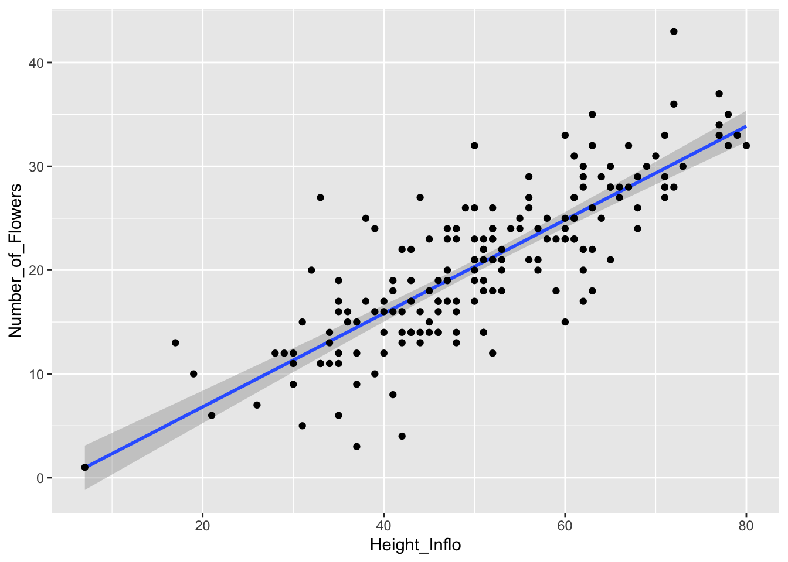
#influence(modelflower)
#rstandard(modelflower)
#influence.measures(modelflower)
#head(fortify(modelflower))Lo que observaremos es que la distribución de los residuales luce más o menos uniforme alrededor del promedio de los residuales (el cero). Hay aproximadamente igual cantidad de valores mayor a cero (por encima de la línea en verde) y menor a cero (por debajo de la línea en verde) que están distribuidos a través de la variable en el eje de X, o valores estimados. En adición que los residuales (negativos o positivos) no son limitado a sub grupos de de los valores estimados (en la X).
Note que se está aplicando el modelo modelflower, y se usan los valores calculados en el modelo .fitted y .resid para producir el gráfico. Se añade una linea horizontal para identificar el modelo nulo con geom_hline.
res<-ggplot(modelflower, aes(.fitted, .resid))+
geom_point()+
geom_hline(yintercept=0,
col="red", linetype="dashed")+
theme(axis.title=element_text(size=20,face="bold"),
axis.text=element_text(size=20, face="bold"))+
xlab("Valores estimados")+
ylab("Residuales")+
ggtitle("Residuales vs. Valores Estimados")
res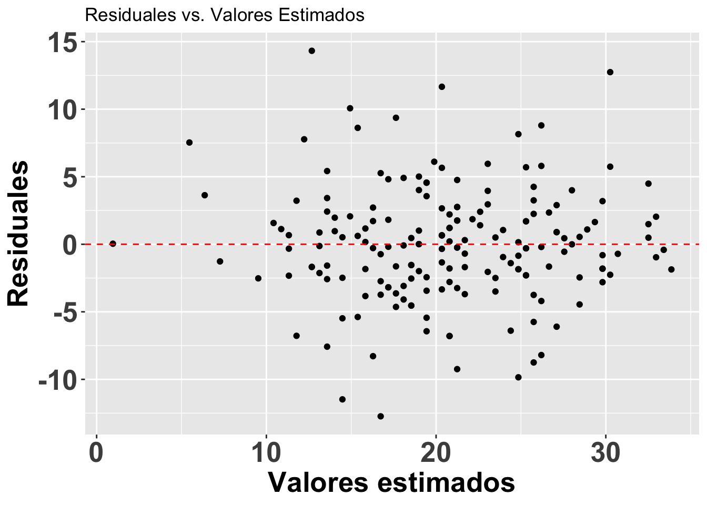
10.5 Los residuales de Student para detectar valores sesgados
A continuación se ilustra otro enfoque para evaluar los residuales. En este caso, para detectar valores sesgados (outliers). Se puede visualizar los residuales se usa los residuales estandarizados divido por la desviación estándar. Valores mayores de 3 serian considerados sesgados. Esta alternativa es apropiada si detectar valores sesgados. Note en la figura que se usa otra vez el modelo modelflower y los valores calculados en el modelo .fitted y los residuales de student con .stdresid. Note ahora también que todos los valores en el eje de Y son mayores de cero.
ResEst=ggplot(modelflower,
aes(.fitted, sqrt(abs(.stdresid)))) +
geom_point(na.rm=TRUE)+
theme(axis.title=element_text(size=20,face="bold"),
axis.text=element_text(size=20, face="bold"))+
xlab("Valores estimados")+
ylab("Residuales estandarizados \n de Student")+
ggtitle("Residuales vs. Valores Estimados")
ResEst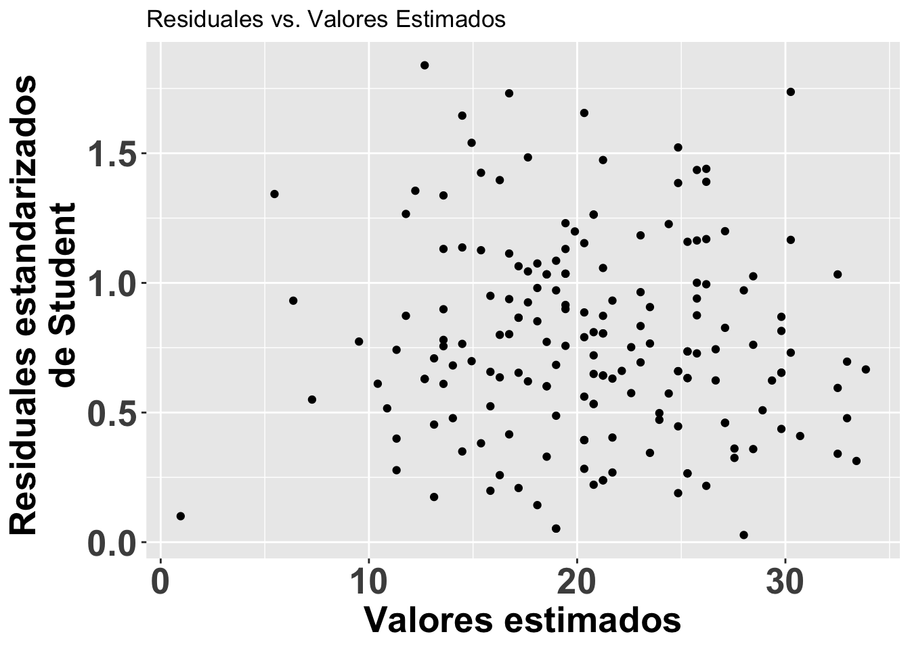
10.6 Valores sesgados con la Distancia de Cook, Di
Continuando con el tema de evaluar si hay valores que podrían influenciar mucho el análisis, podemos utilizar una de las herramientas para evaluar el peso de cada valor sobre una regresión lineal basada en métodos de los mínimos cuadrados, llamada la Distancia de Cook. Este análisis fue desarrollado por R. Dennis Cook en 1977 y tiene como objetivo evaluar cada valor en la matriz de datos y el peso que tiene sobre el resultado (cuando esté este incluido o no en el análisis). Produce un índice para cada uno de los valores sobre el resultado basándose en los valores residuales que se llama la Distancia de Cook. Por lo tanto, ese análisis evalúa el impacto relativo de cada valor sobre el índice. Infortunadamente no está claro cuál es el valor crítico; o sea, qué valor nos puede indicar que se tiene exceso de peso sobre los resultados. Las dos principales sugerencias son: Distancia de Cook, Di, es mayor a 1 (sugerido por R. Dennis Cook Cook mismo en 1982); y que la Di > 4/n, donde n es el número de observaciones (Bollen et al. 1990).
Para hacer una ilustración, continuaremos con el modelo modelflower usando los valores calculados en el modelo anterior. El gráfico se construirá utilizando la opción seq_along, para que los valores en el eje de X se basen en la secuencia de datos en el archivo y los valores en el eje de Y se basen en los valores de la Distancia de Cook. En este caso, vemos que todos los valores están muy por debajo de 1, lo que sugiere que ninguno de los valores individuales influenciaría mucho en los resultados aún si estos fuesen excluidos. Si utilizáramos la segunda alternativa de Di > 4/n, entonces nos deberían preocupar los 8 valores de Di que son mayores a 4/181=0.022, donde 181 es la cantidad de datos en el archivo. Si se considera esta segunda alternativa, sería necesario evaluar 8 valores en la tabla de datos que pudiesen ser sospechosos (los valores encima de la línea roja). Note que no es que están incorrectos; más bien, este resultado es solamente una herramienta para evaluar valores que parecen tener un impacto considerable sobre los resultados.
ggplot(modelflower,
aes(seq_along(.cooksd), .cooksd))+
geom_bar(stat="identity",
position="identity", fill="steelblue")+
geom_hline(yintercept =0.022, colour="red")+
theme(axis.title=element_text(size=20,face="bold"),
axis.text=element_text(size=20, face="bold"))+
xlab("La secuencia de las observaciones")+
ylab("Distancia de Cook")+
ggtitle("Distancia de Cook")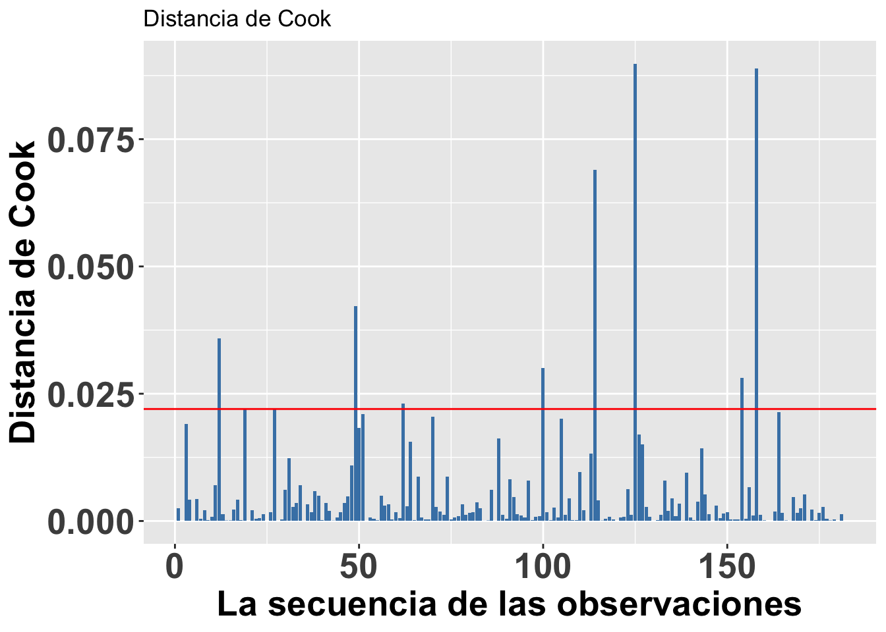
10.7 Causas principales de los valores sesgados
Los valores que parecen sesgados pueden ser normal de la población estudiada, y por consecuencia en estos casos remoción de estos valores podría resultar en descripción de los resultados incorrectos. Primero hay que evaluar los siguientes posibles causas de valores sesgados. Si algunos de los siguientes son presentes hay que resolver los valores o remover los de la hoja de análisis.
- los valores recolectado son erróneo.
- los valores fueron entrado incorrectamente en la hoja de datos
- los valores recolectado tienen diferente dimensiones, por ejemplo algunos fueron recolectados en cm y otros en mm para la misma variable.
10.8 Supuesto de normalidad
Hay muchas pruebas estadísticas que asumen que los datos provienen de una distribución normal. Pero no todas las pruebas tienen que satisfacer ese supuesto. Por ejemplo, un Análisis de Componentes Principales o ACP (en inglés, PCA o Principle Component Analysis) o la prueba de t asumen distribución normal. Por el contrario, las pruebas no paramétricas como Wilcoxon, Mann-Whitney, Kruskall Wallis y otras no asumen ese supuesto.
Una alternativa tradicional para comprobar la normalidad de los datos es mirar el gráfico de QQ; o sea, una visualización para comparar las probabilidades de dos variables en las que se gráfica los cuartiles (recordemos que Q viene de cuartil). Si las distribuciones de las dos variables son similares, los puntos aparecerán nítidamente en el gráfico de QQ sobre la línea de X-Y. Eso se demostrará a continuación.
10.9 qplot
En el gráfico se representa el consumo por la Becasa de Mar de la base de datos Godwits, el ave de las marismas de Argentina que hemos analizado anteriormente. En el gráfico se nota que los datos a los extremos no están muy cerca de la línea X-Y, lo que sugiere que el consumo por la Becasa de Mar no tiene una distribución normal. La función qplot es la manera más sencilla para generar el gráfico de QQ.
# Note que anteriormente ya habíamos depositado los datos en el data.frame BecasaDeMar
ggplot(BecasaDeMar, aes(sample=mgconsumed))+
geom_qq()+
geom_qq_line()+
theme(axis.title=element_text(size=20,face="bold"),
axis.text = element_text(size=20,face="bold"))+
xlab("Valores teóricos")+
ylab("Valores observados")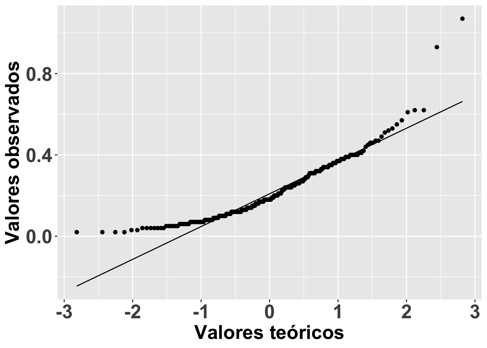
10.10 geom_qq y geom_qq_line
A pesar de lo fácil de este enfoque, apreciar si los datos quedan nítidamente alineados sobre una línea no es tan evidente en algunos casos. Por lo tanto, en la siguiente versión del gráfico de QQ producida con la función geom_qq y geom_qq_line se le añade una línea para mostrar dónde debería estar localizada la gran mayoría de los datos si estos tuvieran una distribución normal. Ahora vemos que claramente muchos de los datos no yacen en la línea. Evidentemente, el trazar la línea teórica ayuda a visualizar la conclusión; en este caso, se podría concluir que el consumo de comida por este pájaro no sigue una distribución normal la linea azul. En el segundo ejemplo se crea un archivo de datos que tiene una distribución normal y esta ejemplo la gran mayoría de los datos solapen la linea, la linea roja
a= ggplot(Godwits, aes(sample = mgconsumed)) +
stat_qq() +
stat_qq_line(colour="blue")+
xlab("Valores teóricos")+
ylab("Valores observados")
df <- data.frame(y = rnorm(2000))
b <- ggplot(df, aes(sample = y))+
stat_qq() +
stat_qq_line(colour="red")
grid.arrange(a,b,ncol=2)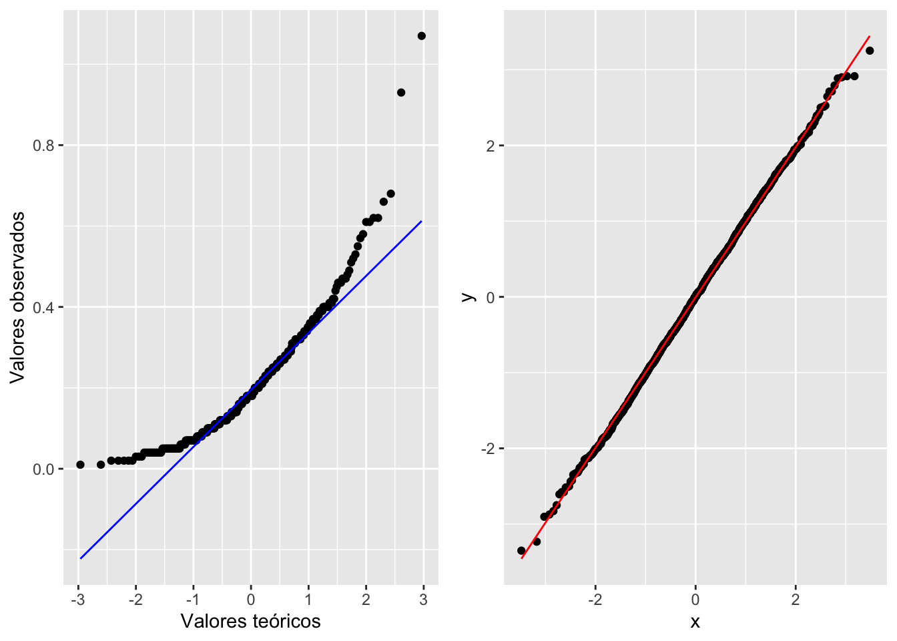
10.11 La distribución normal
Una segunda alternativa para visualizar si los datos siguen una distribución normal es construir un histograma de los datos y gráficar sobre este la curva normal basándonos en el promedio y la desviación estándar de los mismos datos. Para construir el histograma se usa la función geom_histogram y para la distribución teórica normal de estos datos se usa la función stat_function. Esto lo demostramos con gráficos adicionales de la Becasa del Mar, donde se representa la razón de consumo y el período en que esto ocurrió. En la Figura (a) vemos la distribución para todos los períodos, y los otros tres en la Figura (b) muestran una distribución para cada uno de los períodos. Se observa en todos los casos que las distribuciones están sesgadas hacia los valores pequeños (hacia la izquierda). Esta visualización nos ayuda a evaluar la normalidad de esos datos. NOta que no es una prueba estadística igual como el gráfico de qqplot.
Nota la formula para calcular la distribución normal. Hay solamente dos parámetros que necesitamos, el promedio \(\mu\) y la desviación estándar \(\sigma\). Todos los otros son constantes, \(\pi\), y e.
\[P(x)=\frac{1}{{\sigma\sqrt{ 2\pi}}}{e}^{-\frac{{(x-µ)}^{2}}{{2\sigma}^{2}}}\]
Note que en geom_histogram se tiene que incluir
aes(..density..)
y añadir dentro de la función stat_function todo lo siguiente:
stat_function(fun = dnorm, args = list(mean = mean(Godwits\(mgconsumed, na.rm = TRUE), sd = sd(Godwits\)mgconsumed, na.rm = TRUE)), colour = “red”, size = 1)
El parámetro dnorm quiere decir densidad de la distribución normal. También se necesitan dos parámetros para calcular el promedio (mean) y la desviación estándar (sd). Con ambos hay que especificar de dónde provienen los datos; en este caso,
Godwits$mgconsumed
Además, si hay NA en los datos, hay que añadir na.rm = TRUE para excluir los NA. Veamos.
a=ggplot(Godwits, aes(mgconsumed)) +
theme(legend.position = "none") +
geom_histogram(aes(y=..density..),
colour="black", fill="white")+
theme(axis.title=element_text(size=12,face="bold"),
axis.text = element_text(size=12,face="bold"))+
labs(x = "Razón de Consumo", y = "Densidad") +
stat_function(fun = dnorm,
args = list(mean = mean(Godwits$mgconsumed,
na.rm = TRUE),
sd = sd(Godwits$mgconsumed,na.rm = TRUE)),
colour = "red", size = 1)+
ggtitle("Todos los datos")## Warning: Using `size` aesthetic for lines was deprecated in ggplot2 3.4.0.
## ℹ Please use `linewidth` instead.
## This warning is displayed once every 8 hours.
## Call `lifecycle::last_lifecycle_warnings()` to see where this warning was
## generated.b= ggplot(Godwits, aes(mgconsumed)) +
theme(legend.position = "none") +
geom_histogram(aes(y=..density..),
colour="black", fill="white")+
theme(axis.title=element_text(size=12,face="bold"),
axis.text = element_text(size=12,face="bold"))+
labs(x = "Razón de Consumo", y = "Densidad") +
stat_function(fun = dnorm, args = list(mean =
mean(Godwits$mgconsumed, na.rm = TRUE),
sd = sd(Godwits$mgconsumed, na.rm = TRUE)),
colour = "red", size = 1)+
facet_wrap(~PERIOD)+
ggtitle("Por estación anual")
grid.arrange(a,b,ncol=1)## Warning: The dot-dot notation (`..density..`) was deprecated in ggplot2 3.4.0.
## ℹ Please use `after_stat(density)` instead.
## This warning is displayed once every 8 hours.
## Call `lifecycle::last_lifecycle_warnings()` to see where this warning was
## generated.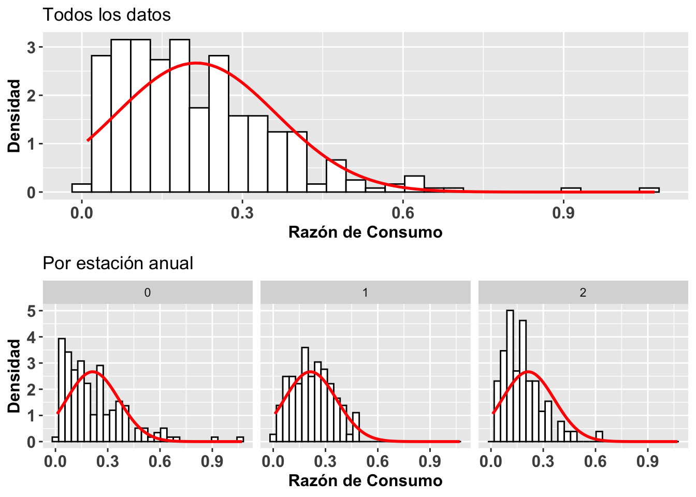
10.12 stat_function
Continuaremos con este mismo análisis pero esta vez evaluaremos la distribución del peso de gorriones en un trabajo de captura y recaptura en 6 meses diferentes. Utilizaremos la base de datos SparrowsElphick. En la figura (a) observamos un histograma de la distribución de los pesos de estas aves por cada mes. Vemos claramente que hay meses (mayo, septiembre y octubre) en los que se tuvieron muchas menos observaciones. En el segundo gráfico, Figura (b), observamos el histograma y la curva normal para todos los datos sin importar el mes. Igualmente, esta visualización nos ayuda a evaluar la normalidad de los datos.
Sparrows=SparrowsElphick
Sparrows$fMonth<-factor(Sparrows$Month,
levels = c(5, 6, 7, 8, 9, 10),
labels = c("Mayo", "Junio", "Julio", "Agosto",
"Sept.", "Oct."))
a=ggplot(Sparrows, aes(wt))+
geom_histogram(binwidth=1, colour="white")+
facet_wrap(~fMonth)+
theme(axis.title=element_text(size=12,face="bold"),
axis.text = element_text(size=12,face="bold"))+
xlab("Peso")+
ylab("Frecuencia")
b=ggplot(Sparrows, aes(wt)) +
theme(legend.position = "none")+
theme(axis.title=element_text(size=12,face="bold"),
axis.text = element_text(size=12,face="bold"))+
geom_histogram(aes(y=..density..), colour="black",
fill="white") +
labs(x = "Peso", y = "Densidad") +
stat_function(fun = dnorm,
args = list(mean = mean(Sparrows$wt, na.rm = TRUE),
sd = sd(Sparrows$wt, na.rm = TRUE)),
colour = "red", size = 1)
grid.arrange(a,b,ncol=2)## `stat_bin()` using `bins = 30`. Pick better value with `binwidth`.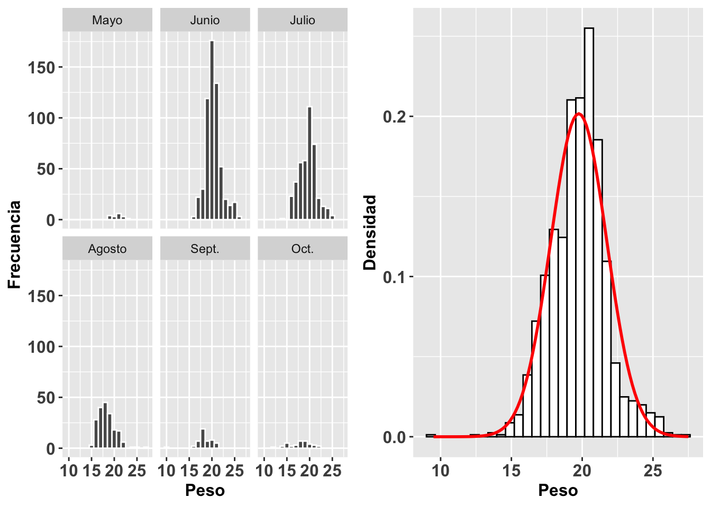
10.13 Visualizando la distribuciones con geom_density
A continuación se muestra otra alternativa para observar los datos anteriores. Nada más que estos ahora se representan sustituyendo las funciones geom_histogram y stat_function por geom_density para la construcción de curvas de densidad. Otra vez utilizaremos la base de datos SparrowsElphick. La curva normal que se genera es tipo gausiana (gaussian en inglés). Nóte que para el segundo conjunto de gráficos, (b), no se le especificó la opción en kernel igual a gaussian ya que de forma predeterminada la función geom_density usa el parámetro gaussian; o sea, no es necesario especificarla si eso es lo que se quiere. Una distribución en donde el pico es más alto significa que hay mayor densidad de datos en esa región de la variable en el eje de X. Podemos apreciar que la curva de densidad no sigue claramente una distribución normal con respecto a los valores en X.
# Note que anteriormente ya habíamos depositado los datos en el data.frame Sparrows:
a= ggplot(Sparrows, aes(wt))+
geom_density(aes(group=fMonth, fill=fMonth),
kernel="gaussian")+
facet_wrap(~fMonth)+
guides(fill=FALSE)+
theme(axis.title=element_text(size=12,face="bold"),
axis.text=element_text(size=12, face="bold"))+
ylab("Densidad")+
xlab("Peso")## Warning: The `<scale>` argument of `guides()` cannot be `FALSE`. Use "none" instead as
## of ggplot2 3.3.4.
## This warning is displayed once every 8 hours.
## Call `lifecycle::last_lifecycle_warnings()` to see where this warning was
## generated.b= ggplot(Sparrows, aes(wt))+
geom_density(aes(group=fMonth,
fill=fMonth),
alpha=.4)+
scale_color_discrete()+
theme(axis.title=element_text(size=12,face="bold"),
axis.text=element_text(size=12, face="bold"))+
ylab("Densidad")+
xlab("Peso")+
labs(colour="Mes")
grid.arrange(a,b,ncol=1)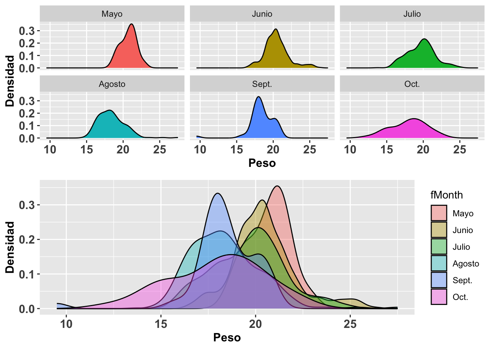
10.14 Colinealidad entre covariables con ggpairs
Hoy en día la cantidad de datos que se obtienen en diferentes estudios puede ser muy impresionante. Muchas veces el objetivo es detectar si unas variables, entre muchas otras, podrían predecir la variable de respuesta. A consecuencia de eso, el problema mayor es tomar en cuenta la colinealidad entre variables explicativas. La colinealidad es simplemente la correlación entre variables en un modelo de análisis de regresión múltiple, en donde las variables predictivas están altamente correlacionadas.
Un ejemplo sencillo de variables con colinealidad podría incluir la relación entre el largo y ancho de las hojas de una herbácea y cómo estas están correlacionadas con la producción de flores. Es probable que la correlación entre el largo y el ancho de la hoja estén correlacionadas con la producción de las flores de formas muy similares; o sea, con una pendiente que explicaría ambas relaciones de formas similares. Entonces, al añadir ambas variables al modelo de regresión múltiple, no estaríamos explicando variaciones distintas, si no más bien la misma variación. Cuando hay mucha colinealidad entre variables explicativas, se debería seleccionar un subgrupo de estas variables que expliquen variaciones distintas para el modelo y no incluir todas las variables.
A continuación exploraremos diferentes alternativas para llevar a cabo este tipo de análisis utilizando otra vez los datos de la orquídea Dipodium. En el primer ejemplo, se utiliza la función cor para evaluar solo una relación: la correlación entre la distancia de la planta a un árbol y la altura de la planta, dejando otras variables a un lado. Como deseamos el estimado de la correlación solamente, utilizamos un par de variables a la vez para evaluar la correlación entre la distancia de la orquídea al árbol y la altura de la inflorescencia (mostrado más adelante). Concluimos que a mayor distancia del árbol, menor es la altura de la inflorescencia al este análisis arrojar un valor de pendiente de -0.095 como se muestra en el ejemplo.
## [1] -0.09541256Otra alternativa es hacer el análisis de correlación de muchas variables en conjunto. En la tabla, Correlaciones de Pearson, se muestra la correlación entre las tres variables siguientes: DBH, cantidad de flores y altura de la inflorescencia. En esa tabla se observa la correlación de Pearson para estos datos. Recordemos que esta correlación asume distribución normal.
| DBH | Number_of_Flowers | Height_Inflo | |
|---|---|---|---|
| DBH | 1.000 | -0.035 | -0.10 |
| Number_of_Flowers | -0.035 | 1.000 | 0.82 |
| Height_Inflo | -0.100 | 0.820 | 1.00 |
10.14.1 Tabla de correlación de Kendall
Usando la función cor se puede también calcular estimados de correlación sin asumir distribución normal usando los métodos Kendall o Spearman mostrados en la Tabla siguiente.
kable(signif(cor(dipodium[,c(3, 8, 9)],
method="kendall",
use="pairwise.complete.obs"),2),
caption =
"\\label{fig:CK}Correlaciones de Kendall")| DBH | Number_of_Flowers | Height_Inflo | |
|---|---|---|---|
| DBH | 1.00000 | 0.00085 | -0.059 |
| Number_of_Flowers | 0.00085 | 1.00000 | 0.650 |
| Height_Inflo | -0.05900 | 0.65000 | 1.000 |
10.14.2 Tabla de correlación de Spearman
| DBH | Number_of_Flowers | Height_Inflo | |
|---|---|---|---|
| DBH | 1.000 | -0.002 | -0.08 |
| Number_of_Flowers | -0.002 | 1.000 | 0.80 |
| Height_Inflo | -0.080 | 0.800 | 1.00 |
En esas tres tablas podemos apreciar un patrón consistente entre todos los métodos; o sea, la altura de la inflorescencia está altamente correlacionada con la cantidad de flores (con coeficientes de correlación de 0.82, 0.65, y 0.81 respectivamente). Note que para facilitar la lectura de los valores, se usó la función signif para así identificar solamente los valores significativos del análisis.
Brevemente recapitulamos, si los datos no siguen una distribución normal, se deberían utilizar los métodos Kendall o Spearman. Si se tienen pocos datos, Kendall tiende a ser una mejor alternativa para determinar el indice de correlación. Se le advierte, sin embargo, que consulte libros de estadística sobre este tema antes que realice un análisis de este tipo ya que la decisión de seleccionar una alternativa sobre otra no es tan sencilla.
10.15 Seleción de parámetros para correlaciones cuando hay NA
Además, los analísis anteriores utilizados emplearon el parámetro pairwise.complete.obs, ya que obviaría los NA en las columnas que se utilizan para calcular la correlación. Por lo tanto, la cantidad de pares de datos utilizados para calcular las diferentes correlaciones entre variables puede variar si hay NA en el archivo. Tome en consideración que hay otras cuatro alternativas para analizar los datos cuando tenemos NA presentes: everything, all.obs, complete.obs y na.or.complete. No vamos a discutir esas alternativas en el presente libro. Sería bueno que busque información en R para sus usos. Estas alternativas se discutiran en otros modulos.
Finalmente, también se utilizó el comando kable ya que es una manera efectiva de organizar los resultados en una tabla.
10.16 Uso de GGally para ver correlaciones
Continuando con el mismo tema, una tercera opción para descubrir la colinealidad entre covariables es utilizar el paquete GGally, ya que no solamente nos calcula las correlaciones, si no que también nos permite hacer los gráficos de densidad de la distribución de las variables y un gráfico de dispersión por pares de variables evaluadas.
En los gráficos de la siguiente Figura observamos los coeficientes de correlación, la distribución de los datos y la visualización de correlación por cada par. Además, vemos el diagrama de caja de los datos cuando hay variables discretas. Note al extremo derecho que la variable Herbivory tiene una categoría no identificada, que incluye los NA.
Con la función de ggpairs podemos calcular las correlaciones entre las variables y a la misma vez producir todos los gráficos entre las variables y gráficos de distribución de densidad de cada variable. En el gráfico podemos observar en la parte izquierda la distribución de los datos en pares. En la diagonal se observa la densidad de cada una de las variables. En la parte superior derecha se observa el valor de correlación y en el extremo derecho se observan los diagramas de caja de las variables discretas con relación a la variable de la izquierda. Este gráfico es sumamente práctico, ya que produce mucha información con pocos pasos. Desafortunadamente, no hay manera de remover los NA al presente. A consecuencia de esto, al extremo derecho uno observa en las cajas abajo una barra con muchos valores (la de la derecha), pero esta representa todos los valores NA en la tabla de datos. En este caso, la presencia de herbivoria en las plantas no fue recolectada y en cambio se dejó con un NA. Note que aquí no se pueden poner ceros u otros valores. Las alternativas podrían ser H para evidenciar la presencia de herbaria y n para las plantas donde no hay evidencia de herbivoría.
## [1] "Tree Number" "Tree species"
## [3] "DBH" "Plant number"
## [5] "Ramet number" "Distance"
## [7] "Orientation" "Number_of_Flowers"
## [9] "Height_Inflo" "Herbivory"
## [11] "RowPosition_NF" "Number_Flowers_position"
## [13] "Number_of_fruits" "Perc_FR_set"
## [15] "pardalinum_or_roseum" "Fruit_position_effect"
## [17] "Frutos_si_o_no" "P_or_R_Infl_Lenght"
## [19] "Num of fruits" "Species_Name"
## [21] "Cardinal orientation"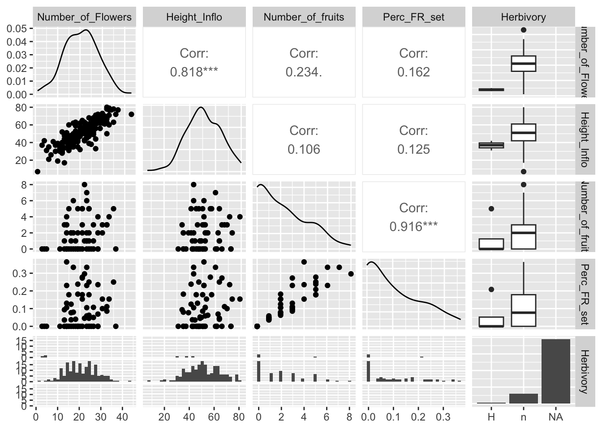